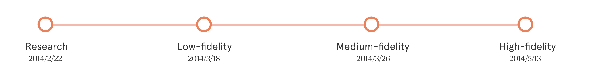
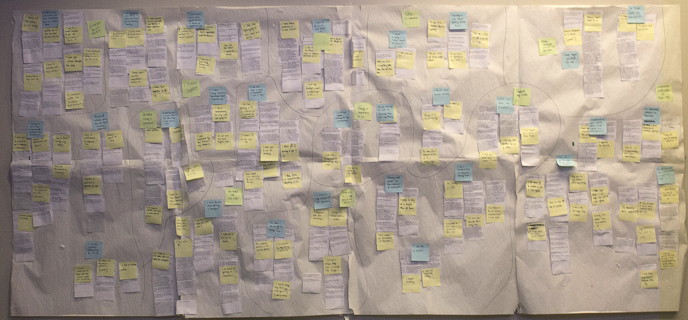
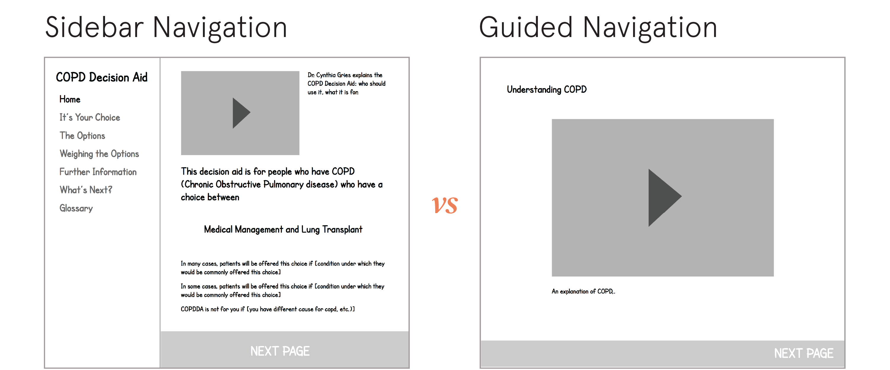
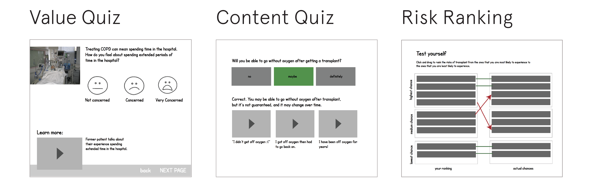
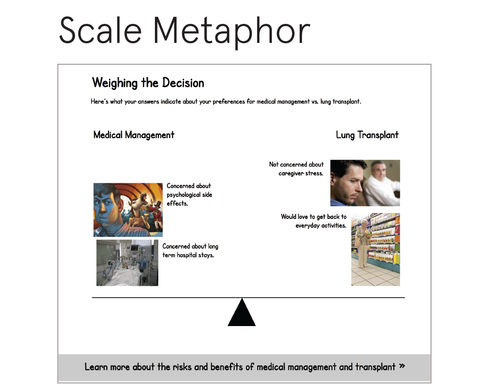
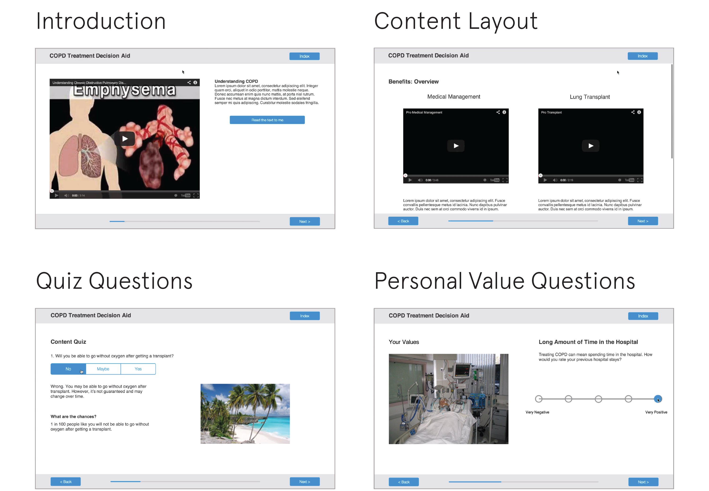

UX Research
2014
Group Project with Julia Teitelbaum, Amritha Mallikarjun, Russell Andrews
Project Introduction
This is our Capstone project, a final-semester project that allows us to to work closely with a real client and apply the UX and research skills we have learned to help the client with their requests.
Our team had the honor to work with Dr. Cynthis Gries from University of Pittsburgh Medical Center (UPMC) to design a decision aid for patients with Chronic Obstructive Pulmonary Disease (COPD), commonly known as emphysema. COPD affects patient's lungs, making the lungs unable to retain oxygen. Patients with COPD have severe issues with breathing. Many patients describe their difficulties with breathing as "breathing through a coffee straw". Hence, these patients have very low quality of life.
Although there is no cure for COPD, there are two approaches to treat it: medical treatment (oxygen, bronchodilators, steroids, pulmonary rehabilitation) and lung transplant. And our decision aid would help the patients choose a treatment that would benefit them more given their values and individual situations.
Hunt Statement
Creating a tool to educate patients about the risks and benefits of each treatment for severe Chronic Obstructive Pulmonary Disease (COPD) and help them connect their values and individual circumstances with their treatment choice.
My role
As the research lead of the team, I, together with my team, interviewed many stakeholders, people who were involved in patients' decision-making process, in the early stage. We also talked to patients pre- and post-transplant to understand their worries and concerns. In the designing phase, I participated in low-, medium-, and high-fidelity prototyping and contributed greatly to each design iteration. I also took part in the report writing and documentation.
Design Process
Background Research
To better help the patients, we started off reading existing literatures on COPD and its treatment and finding decision aids for other diseases. This was followed by visits to the UPMC to observe info sessions and consulting sessions for patients . Last but not least, we interviewed with stakeholders who were involved in patients' decision making process. Those stakeholders were, but not limited to, caregivers, surgeons and pulmonologists. From the stakeholders, we wanted to get a full picture of what people would need and want from our decision aid.
Affinity Diagram
We gathered large amount of information from observation and interviews. To bring together all the findings and clarify the focus of the decision aid, we made an affinity diagram consisted of over 700 post-its.
Among the numerous findings we had, we dug out 3 critical misconceptions that we would target in the decision aid. We found that: patients "think that risks and complications won't happen to them","trust doctors but also listen to other patietns", and "consider a lung transplant as their only treatment option".
Low-Fidelity Prototype
In this prototype, we aimed to test the overall layout and content structure. We focused on exploring navigation structures and ways to present information about treatment options.
We tested two navigation structures, guided and sidebar navigation. The guided navigation provided patients with all of the information in a linear style. Patients would only use "Next" and "Previous" buttons to go through the decision aid. The benefit was its ease of use and that patients would not miss any important information by skipping through sections.
The sidebar navigation, on the other hand, offered more flexibility to go from section to section. It also signaled the users which section of the decision aid they were at by referring to the menu on the left.
In terms of content presentation, we tried multiple ways of providing information to the patients. Other than using texts, we integrated videos. There were also quiz questions that stressed major takeaway points that the patients should know about each treatment.
We also used a scale metaphor that was commonly used in decision aids to visually present pros and cons of two options. Prior to the scale metaphor page, patients had to answer questions about what they valued the most in their lives and what they wanted to get out from the treatment. Depending on what values each treatment could satisfy, we put the values that the patients chose on two sides of the scale, each side representing one treatment option. By visually seeing which side the scale tilts against, patients would have a clearer idea of which treatment would be better for them.
Medium-Fidelity Prototype
We built an interactive medium-fidelity prototype using a prototyping tool called Proto.io. During the medium-fidelity phrase, we focused on refining three key elements of the tool: the navigational structure, the interactive elements (i.e., quiz questions, videos, and a scale metaphor), and the content design.
High-Fidelity Prototype
Our high fidelity prototype was a static website, created with the expectation that some of the code might be used in the final product. In high-fidelity prototyping phase, we significantly improved the usability of our navigation, the organization of our content, and the videos in the decision aid.
For navigation, we added an option for patients to use arrow keys on their keyboards to navigate between pages. This resulted from our previous finding from med-fi prototype, which showed that patients had difficulties using a computer mouse and clicking on buttons.
We reorganized the content into three sections, general introduction of emphysema and the decision aid, medical treatment, and lung transplant. Each section is color-coded to avoid confusion.
We also found videos of real patients talking about their experience with each treatment. Due to short on time, we also made our own videos for content that we could not find on the Internet. Those videos served as placeholders and guidelines for our client so that they knew what videos to record for the final version of the decision aid.
Final Delivery
Click to see our final prototype in action.
Our client was very satisfied with the final work and decided to continue working on it based on our design and launch it in the near future.